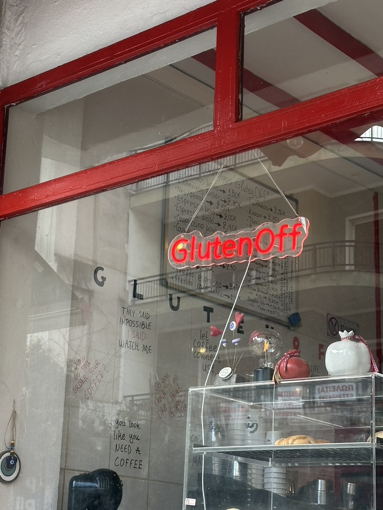

Brunch & Coffee με άρωμα άλλης δεκαετίας
Ένας ζεστός και φιλόξενος vintage χώρος στην καρδιά της Αλεξανδρούπολης. Εδώ θα απολαύσετε εξαιρετικό καφέ, πλούσιο Brunch και υπέροχες αλμυρές ή γλυκές δημιουργίες, σε ένα περιβάλλον αποκλειστικά χωρίς γλουτένη, φτιαγμένες με αγάπη και φροντίδα για όλους!
Είμαστε το μοναδικό καφέ στην πόλη που λειτουργεί σε ένα περιβάλλον εντελώς ελεύθερο από γλουτένη. Δεν υπάρχει κίνδυνος επιμόλυνσης, οπότε μπορείτε να απολαύσετε τα πάντα με απόλυτη σιγουριά, είτε έχετε κοιλιοκάκη είτε ακολουθείτε μια gluten-free διατροφή.
Το γεγονός ότι δεν χρησιμοποιούμε γλουτένη δεν σημαίνει ότι κάνουμε εκπτώσεις στη γεύση! Χρησιμοποιούμε τα καλύτερα υλικά και χειροποίητες συνταγές για να σας προσφέρουμε brunch, γλυκά και σνακ που είναι πεντανόστιμα και λατρεύονται από όλους.
Ο χώρος μας είναι σχεδιασμένος για να σας ταξιδέψει σε άλλη δεκαετία. Η ζεστή, retro διακόσμηση και το φιλικό μας προσωπικό δημιουργούν το ιδανικό περιβάλλον για να χαλαρώσετε, να δουλέψετε ή να απολαύσετε τη στιγμή με την παρέα σας.

"Υπέροχες δημιουργίες χωρίς γλουτένη που μπορούν να απολαύσουν πάσχοντες από κοιλιοκάκη κ όχι μόνο! Το προσωπικό ευγενικό και πρόθυμο."
"Εγγύηση ο χώρος, ο καφές και τα φαγητά. Τα κορίτσια πολύ ευγενικά και πάντα χαμογελαστά. Πολύ ζεστός χώρος που θυμίζει άλλη δεκαετία."
"Όλα τα προϊόντα είναι χωρίς γλουτένη! Ένα πολύ φιλικό περιβάλλον με καλή εξυπηρέτηση! Έχεις την επιλογή σε αλμυρό & γλυκό."
📍 Λεωφόρος Ελ. Βενιζέλου 68
Αλεξανδρούπολη, Τ.Κ. 681 00
📅 Δευτέρα - Σάββατο
⏰ Ανοίγει νωρίς το πρωί: 06:30 π.μ.
📞 Τηλέφωνο: 2551 024382
💬 Περάστε για take-away ή ελάτε να καθίσετε μαζί μας!